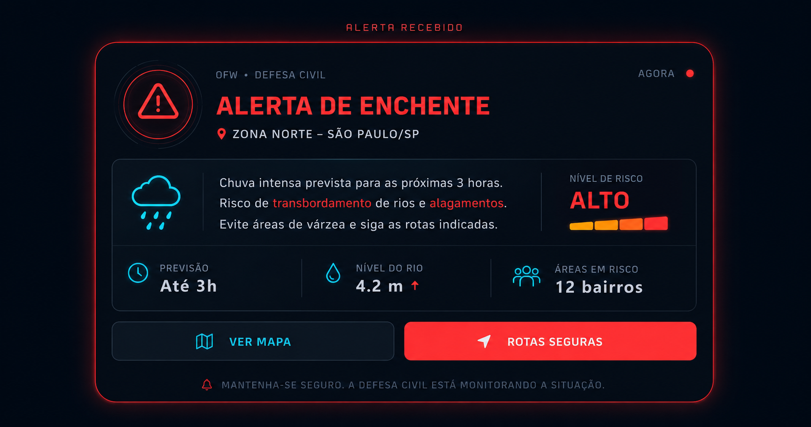

Tecnologia espacial aplicada à prevenção de enchentes
Sistema preventivo inspirado em sensores climáticos, satélites e monitoramento orbital em tempo real.
Nível da Água
Risco Moderado143/150
95,3% operacional
87%
Satélite Orbital
Sinal estável
Alerta Climático
Chuvas intensas previstas nas próximas horas.
O Brasil tem um problema crítico com enchentes
Milhares de famílias são afetadas todos os anos por eventos extremos que poderiam ter impactos reduzidos com monitoramento preventivo.
+150 mil
Desalojados por ano
R$ 8 bi
Prejuízos anuais
600+
Municípios em risco
72%
Casos poderiam ter resposta antecipada
Chuvas Extremas
Eventos climáticos severos se tornam cada vez mais frequentes, intensificando enchentes e deslizamentos em áreas urbanas.
Alertas Tardios
Muitas tragédias acontecem porque comunidades recebem avisos tarde demais para evacuar com segurança.
Comunidades Vulneráveis
Regiões periféricas e áreas de risco sofrem com infraestrutura insuficiente e ausência de monitoramento contínuo.
Tragédias Recentes
A maior tragédia climática recente do Brasil
Mais de 400 cidades afetadas, milhares de desalojados e colapso urbano em diversas regiões.
Falta de tempo para reação
Deslizamentos e enchentes causaram centenas de mortes em poucas horas.
Impacto social nas periferias
Comunidades vulneráveis perderam casas, renda e acesso básico após as chuvas extremas.
Tecnologia inspirada em sistemas reais de monitoramento climático e espacial
O Orbital Flood Watch combina monitoramento orbital, sensores inteligentes e comunicação em tempo real para reduzir impactos causados por enchentes.
Satélites Climáticos
Inspirado em tecnologias utilizadas por satélites meteorológicos como GOES, NASA, NOAA e INPE para análise climática em tempo real.
- ▸ Monitoramento de tempestades
- ▸ Análise de nuvens e chuvas
- ▸ Sensoriamento remoto
Detecção de Risco
Sensores locais monitoram aumento do nível da água, intensidade da chuva e regiões vulneráveis.
- ▸ Sensor ultrassônico
- ▸ Sensor de chuva
- ▸ Monitoramento contínuo
Análise Inteligente
O sistema interpreta informações climáticas e define níveis de risco automaticamente.
- ▸ Dados em tempo real
- ▸ Níveis de risco
- ▸ Análise preventiva
Machine Learning • IA
Algoritmos processam os dados coletados e auxiliam na previsão e identificação antecipada de cenários de risco, permitindo evacuações seguras.
- ▸ Previsão de risco em até 72h
- ▸ Machine Learning climático
- ▸ Análise contínua de sensores
- ▸ Detecção inteligente de padrões
Comunicação Rápida
Alertas podem ser enviados rapidamente para comunidades vulneráveis e órgãos responsáveis.
- ▸ SMS e notificações
- ▸ Painéis digitais
- ▸ Evacuação preventiva
"Muitas tragédias não acontecem apenas pela enchente, mas pela falta de tempo para reação."
O objetivo do Orbital Flood Watch é transformar monitoramento climático em prevenção real, ajudando comunidades vulneráveis a reagirem antes do desastre.
Nossa missão é salvar vidas
O Orbital Flood Watch utiliza dados climáticos, sensores inteligentes e análise preditiva para antecipar riscos e reduzir os impactos das enchentes antes que elas aconteçam.
Prevenção Proativa
Identificar riscos antes que se tornem desastres, dando tempo para que autoridades e comunidades tomem medidas preventivas.
Monitoramento Contínuo
Acompanhar condições climáticas e ambientais em tempo real.
Redução de Danos Materiais
Minimizar perdas econômicas através de evacuações antecipadas e proteção de infraestrutura crítica.
Proteção de Vidas
Reduzir em grande escala o número de vítimas fatais em regiões onde o sistema estiver implementado.
Fortalecer Comunidades
Educar e engajar comunidades vulneráveis sobre riscos, prevenção e procedimentos de segurança.
Para quem desenvolvemos
O sistema foi pensado para atender múltiplos perfis de usuários com necessidades distintas e complementares.
Comunidades Vulneráveis
Moradores de áreas sujeitas a enchentes e deslizamentos que precisam receber alertas antecipados para agir com segurança.
- ▸ Alertas em tempo real
- ▸ Rotas de evacuação
- ▸ Informações preventivas
Defesa Civil
Equipes responsáveis pelo gerenciamento de emergências e coordenação das ações de resposta.
- ▸ Dashboard completo
- ▸ Mapeamento de risco
- ▸ Coordenação de equipes
Órgãos Públicos
Prefeituras e gestores públicos que necessitam de dados para planejamento urbano e prevenção de desastres.
- ▸ Dados estratégicos
- ▸ Relatórios técnicos
- ▸ Tomada de decisão
Pesquisadores
Profissionais que utilizam dados climáticos para estudos, análises ambientais e desenvolvimento científico.
- ▸ Histórico climático
- ▸ Dados de sensores
- ▸ Análises avançadas
O impacto real do sistema
Cada funcionalidade foi projetada para reduzir riscos, proteger comunidades e auxiliar autoridades na tomada de decisões.
Alertas Imediatos
Notificações enviadas em segundos após a detecção de risco, permitindo ações preventivas mais rápidas.
Prevenção Inteligente
Modelos preditivos analisam dados climáticos e antecipam cenários de enchentes antes que se tornem emergências.
Acesso Simplificado
Plataforma acessível por dispositivos móveis, facilitando o acesso às informações críticas.
Monitoramento Contínuo
Sensores e dados orbitais atualizados em tempo real garantem acompanhamento permanente das regiões monitoradas.
Redução de Impactos
Menor número de vítimas, menos danos materiais e maior capacidade de resposta diante de eventos extremos.
Apoio à Comunidade
Integra moradores, Defesa Civil e órgãos públicos em uma única rede de prevenção e comunicação.
Como o sistema funciona na prática
Do monitoramento ao envio de alertas, todo o processo acontece de forma automática para reduzir o tempo de resposta.
Coleta de Dados
Sensores locais e dados climáticos monitoram constantemente as condições ambientais.
Análise Inteligente
A IA interpreta os dados e identifica padrões associados a enchentes.
Envio de Alertas
Comunidades e autoridades recebem notificações instantaneamente.
Evacuação Segura
Rotas seguras e informações preventivas ajudam na proteção da população.
